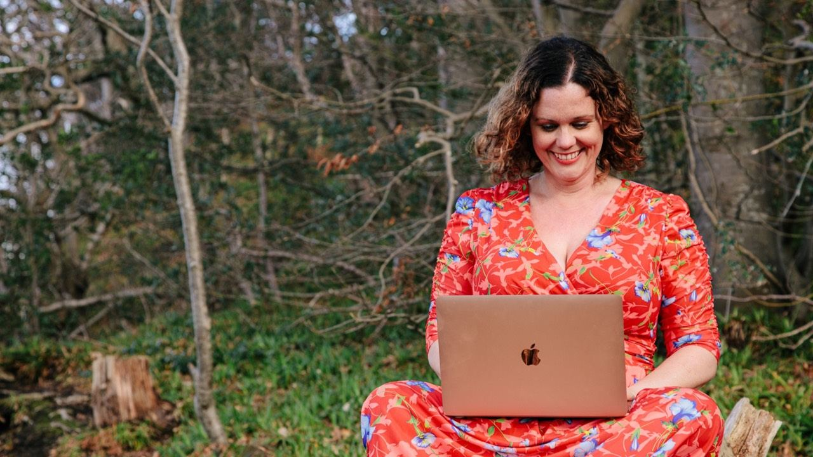
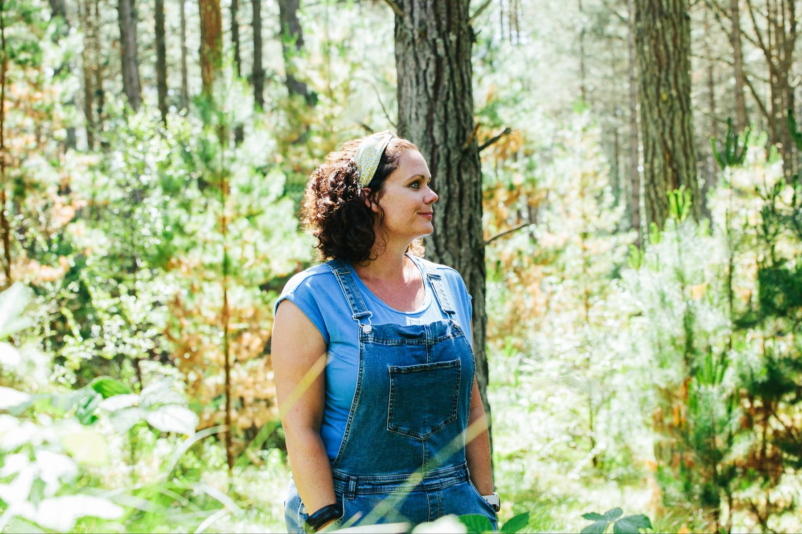
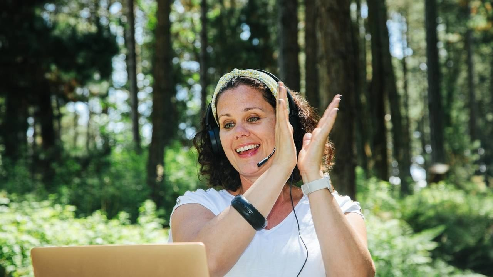
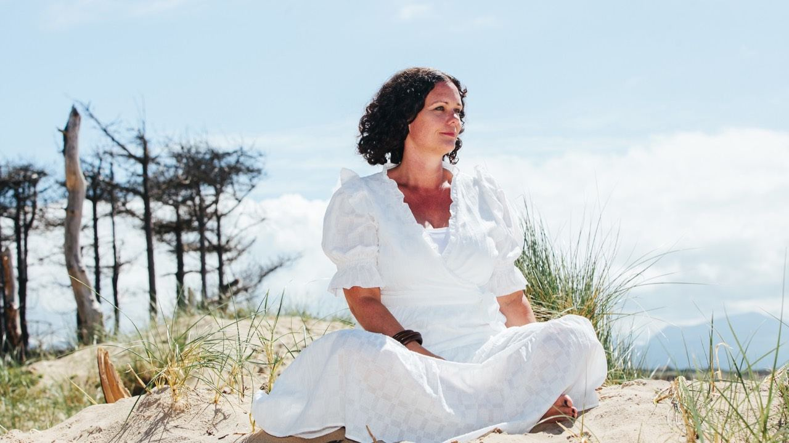

OT yourselfto freedom
Former OT Beki Eakins helps occupational therapists design, grow and scale an online business, using the skills they already have.
Find your stageFormer OT Beki Eakins helps occupational therapists design, grow and scale an online business, using the skills they already have.
Wales, most days. The office moves. The income does not stop.

I am Beki, former Occupational Therapist and now Business and Lifestyle Coach. I left the profession in 2019 to travel the world, build my business and to support a freedom-based life.
More about BekiWhich stage are you at?
Tap the one that sounds most like you. Not sure? Take the 2-minute quiz.
The Quiet Planner
You've got years of skill and a quiet feeling there's more you could do with it. You haven't started yet, and that's fine. Most OTs I work with began exactly here, with a job, a rota and an idea they hadn't said out loud.
- Your strengths
- Steady income while you test ideas, deep clinical knowledge, and time to start small without pressure.
- What holds you back
- The idea stays in your head because you don't know what you'd actually offer, or who'd pay for it.
- Your next step
- Turn one thing you already know into a simple offer, alongside your job, without changing your job.
The Fully Booked Solo
You did the brave bit. You work for yourself and your diary is full. The catch is that your income is tied to your hours, so the only way to earn more is to work more, and you're already tired.
- Your strengths
- Proven demand, clients who trust you, and full control over how you work.
- What holds you back
- No session, no income. Time off costs you money.
- Your next step
- Package what you already know into something that earns without another session in the diary.
The Stretched Clinic Owner
You've built a practice and a team, which most OTs never do. But it still runs through you. The questions, the decisions and the hardest cases all come back to your desk.
- Your strengths
- A real business, a team, and a reputation people refer to.
- What holds you back
- The business depends on your hours and your head. Step back and things wobble.
- Your next step
- Get your expertise out of your head and into something packaged, so the business earns and runs without you in every room.
The Ready-to-Scale Expert
You've already done what most OTs only talk about: you have your practice and you've started something online. Now it needs to sell steadily, not only when you push it.
- Your strengths
- A product that exists, proof people will buy, and experience of launching.
- What holds you back
- Sales come in waves, so it never quite replaces the hours.
- Your next step
- A simple, repeatable way to sell what you've already built.
A former OT who found the way out

Burnout first
Beki experienced burnout from trying to be a Mum, run a home and trying to work as an OT.
Then a model that worked
I started out coaching healthcare workers with stress and burnout, and had fast success: I doubled my OT income from the 2nd month, and hit 5k months in my 4th month of business.
Now about 12 hours a week
The business model allowed me to work just 12 hours per week. We spend our days going out in the forest, mountain biking or out on the canoe.
Beki's storyWays to work with Beki

What Beki's clients have done
Of course success depends on how much energy and commitment each client applies.
- Sarita made $21,550 AUD within her first launch, 4 months into the programme
- Shaenelle hit $10k USD months in month 5, and $14k in month 6 of the programme
- Nicola made £6000 with her nature-based coaching programme in 6 months
- Ivan sold his first offer within 3 weeks, and made $25,000
- Sascha makes 2-4 times her NHS employee income, whilst working less
- Mel developed a Burnout programme and has since made over $20k
- Michelle signed her first client within 3 weeks and then secured enough further clients to leave her day job!
- Ellie got to $15,000 AUD per month within 5 months
- Kelsey had a $35k launch
- Bethany doubled her OT income in 6 months
- Alex replaced her OT wage within 9 months
- Sharon sold her first offer in just one social media post
- Brad made $6000 AUD within the first 4 months
- Anna made £4000 in her first 4 months
“She turns up authentically, honestly and comfortably as herself.”
“Despite years of therapy, most of what I know about overcoming my mindset has come from Beki.”
The podcast
OT Yourself to Freedom: OTs who built the way out, in their own words.
Starting Your Online OT Business
Featuring Beki Eakins (Repost from The OT Lifestyle Movement)
From Blood Pressure Meds to Closing His Clinic
How OT Ivan Hardcastle Built a Freedom Business in 2 Years
Why OTs Are Perfectly Positioned
To Lead the Somatic Nervous System Revolution, with Sarita
From Baker to OT to Business Owner
How Brad Williams Created a Driving Programme for Neurodivergent Learners
The OT Path to Freedom
Burnout Recovery, Alignment & Farm OT with Alex Viera
What a 12-Hour Work Week Looks Like
How I Designed My Freedom Life as a Former OT
What happens on a call
A free 45-minute Connection Call with Rob. Routing you to the right room is part of the job, not a way of turning you away.



Questions
Do I provide one off coaching sessions?
I am happy to offer an initial chat to see whether we would be a good fit to work together, but I do not find one off sessions as effective at meeting bigger goals. I would rather work with people who are fully committed to creating change at a deeper level.
What happens if I am unhappy with the service?
There is always a 14-day money back guarantee, meaning you have sufficient time to explore the programme. Please also feel free to discuss any personal requirements that you feel could be improved as I value feed back and this is a continuously improving service.
Can Occupational Therapists start an online business?
Absolutely! More OTs (OTPs) than ever are transitioning online, using skills they already have to create high-ticket coaching, consulting, and education-based offers. With the right strategy, you can build a profitable online OT business that provides financial freedom, flexibility, and deeper impact - without burning out in traditional healthcare systems.
Do I need a website to start my online OT business?
No! In fact, building a website too early can slow you down. Most successful OTs start by validating their idea and securing clients through organic social media marketing and direct outreach .
Inside our programmes, we teach high profit actions - this will save you years in wasted time on pointless tasks.
What if I don’t have a business idea yet?
That’s exactly what we help with! Many OTs we work with start with no idea, just a desire for change. We guide you through the process of:
- Uncovering your niche based on your skills and passions - Validating your offer so you know it will sell before launching - Building confidence in sales, marketing, and entrepreneurship
You don’t need all the answers before you start, you just need a strategy.
More questions?
One call. Your time back.
Free, 45 minutes, with Rob. Or start with Beki's free resources.